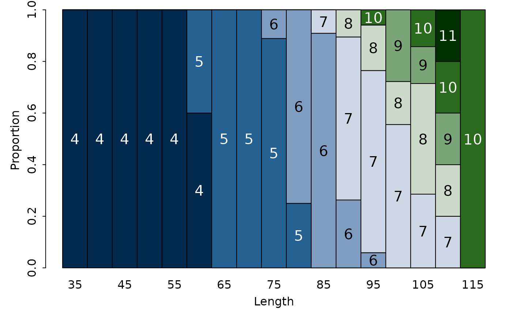
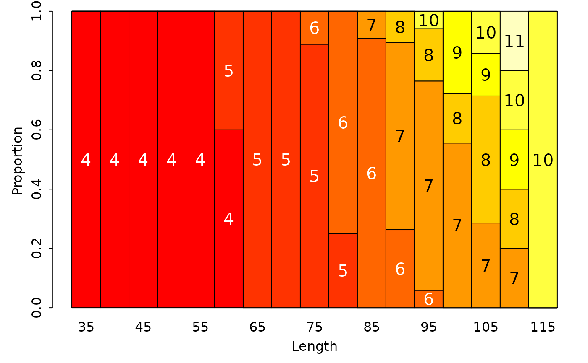

Various plots to visualize the proportion of fish of certain ages within length intervals in an age-length key.
alkPlot( key, type = c("barplot", "area", "lines", "splines", "bubble"), xlab = "Length", ylab = ifelse(type != "bubble", "Proportion", "Age"), xlim = NULL, ylim = NULL, showLegend = FALSE, lbl.cex = 1.25, leg.cex = 1, lwd = 2, span = 0.25, pal = paletteChoices(), grid = TRUE, col = "gray80", buf = 0.45, add = FALSE, ... )
Arguments
| key | A numeric matrix that contains the age-length key. |
|---|---|
| type | A string that indicates the type of plot to construct. See details. |
| xlab, ylab | A string that contains the label for the x- or y-axis. |
| xlim, ylim | A numeric of length 2 that provide the limits for the x-axis or y-axis. |
| showLegend | A logical that indicates whether a legend should be displayed (not implemented for |
| lbl.cex | A numeric character expansion value for labels inside the bars when |
| leg.cex | A numeric character expansion value for labels on the legend when |
| lwd | A numeric that indicates the line width when |
| span | A numeric that indicates the span value to use in |
| pal | A string that indicates the palette to generate colors for the bars, areas, lines, or spline lines. The name of a palette must be one of “rich”, “cm”, “default”, “grey”, “gray”, “heat”, “jet”, “rainbow”, “topo”, or “terrain”. See |
| grid | A logical that indicates whether a grid should be placed under the bubbles when |
| col | A string that indicates the color of the bubbles when |
| buf | A single numeric that indicates the relative width of the bubbles when |
| add | A logical that indicates whether the data should be added to an already existing plot. May be useful for visually comparing age-length keys. Only implemented when |
| ... | Additional arguments to pass to |
Value
None, but a plot is constructed.
Details
A variety of plots can be used to visualize the proportion of fish of certain ages within length intervals of an age-length key. The types of plots are described below and illustrated in the examples.
A “stacked” bar chart where vertical bars over length intervals sum to 1 but are segmented by the proportion of each age in that length interval is constructed with
type="barplot". The ages will be labeled in the bar segments unlessshowLegend=TRUEis used.A “stacked” area chart similar to the bar chart described above is constructed with
type="area".A plot with (differently colored) lines that connect the proportions of ages within each length interval is constructed with
type="lines".A plot with (differently colored) lines, as estimated by loess splines, that connect the proportions of ages within each length interval is constructed with
type="splines".A “bubble” plot where circles whose size is proportional to the proportion of fish of each age in each length interval is constructed with
type="bubble". The color of the bubbles can be controlled withcol=and an underlying grid for ease of seeing the age and length interval for each bubble can be controlled withgrid=. Bubbles from a second age-length key can be overlaid on an already constructed bubble plot by usingadd=TRUEin a second call toalkPlot.
Note that all plots are “vertically conditional” -- i.e., each represents the proportional ages WITHIN each length interval.
IFAR Chapter
5-Age-Length Key.
References
Ogle, D.H. 2016. Introductory Fisheries Analyses with R. Chapman & Hall/CRC, Boca Raton, FL.
See also
See alkIndivAge for using an age-length key to assign ages to individual fish.
Examples
## Make an example age-length key WR.age <- subset(WR79, !is.na(age)) WR.age$LCat <- lencat(WR.age$len,w=5) raw <- xtabs(~LCat+age,data=WR.age) ( WR.key <- prop.table(raw, margin=1) )#> age #> LCat 4 5 6 7 8 9 #> 35 1.00000000 0.00000000 0.00000000 0.00000000 0.00000000 0.00000000 #> 40 1.00000000 0.00000000 0.00000000 0.00000000 0.00000000 0.00000000 #> 45 1.00000000 0.00000000 0.00000000 0.00000000 0.00000000 0.00000000 #> 50 1.00000000 0.00000000 0.00000000 0.00000000 0.00000000 0.00000000 #> 55 1.00000000 0.00000000 0.00000000 0.00000000 0.00000000 0.00000000 #> 60 0.60000000 0.40000000 0.00000000 0.00000000 0.00000000 0.00000000 #> 65 0.00000000 1.00000000 0.00000000 0.00000000 0.00000000 0.00000000 #> 70 0.00000000 1.00000000 0.00000000 0.00000000 0.00000000 0.00000000 #> 75 0.00000000 0.88888889 0.11111111 0.00000000 0.00000000 0.00000000 #> 80 0.00000000 0.25000000 0.75000000 0.00000000 0.00000000 0.00000000 #> 85 0.00000000 0.00000000 0.90909091 0.09090909 0.00000000 0.00000000 #> 90 0.00000000 0.00000000 0.26315789 0.63157895 0.10526316 0.00000000 #> 95 0.00000000 0.00000000 0.05882353 0.70588235 0.17647059 0.00000000 #> 100 0.00000000 0.00000000 0.00000000 0.55555556 0.16666667 0.27777778 #> 105 0.00000000 0.00000000 0.00000000 0.28571429 0.42857143 0.14285714 #> 110 0.00000000 0.00000000 0.00000000 0.20000000 0.20000000 0.20000000 #> 115 0.00000000 0.00000000 0.00000000 0.00000000 0.00000000 0.00000000 #> age #> LCat 10 11 #> 35 0.00000000 0.00000000 #> 40 0.00000000 0.00000000 #> 45 0.00000000 0.00000000 #> 50 0.00000000 0.00000000 #> 55 0.00000000 0.00000000 #> 60 0.00000000 0.00000000 #> 65 0.00000000 0.00000000 #> 70 0.00000000 0.00000000 #> 75 0.00000000 0.00000000 #> 80 0.00000000 0.00000000 #> 85 0.00000000 0.00000000 #> 90 0.00000000 0.00000000 #> 95 0.05882353 0.00000000 #> 100 0.00000000 0.00000000 #> 105 0.14285714 0.00000000 #> 110 0.20000000 0.20000000 #> 115 1.00000000 0.00000000## Various visualizations of the age-length key alkPlot(WR.key,"barplot")alkPlot(WR.key,"barplot",pal="gray")alkPlot(WR.key,"barplot",showLegend=TRUE)alkPlot(WR.key,"area")alkPlot(WR.key,"area",showLegend=TRUE)alkPlot(WR.key,"area",pal="gray")alkPlot(WR.key,"lines")alkPlot(WR.key,"lines",pal="gray")alkPlot(WR.key,"lines",showLegend=TRUE)alkPlot(WR.key,"splines")alkPlot(WR.key,"splines",span=0.2)alkPlot(WR.key,"splines",pal="gray",showLegend=TRUE)alkPlot(WR.key,"bubble")alkPlot(WR.key,"bubble",grid=FALSE)alkPlot(WR.key,"bubble",grid="blue")